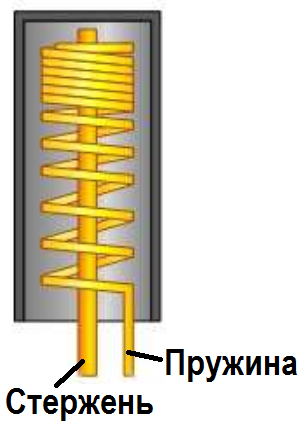
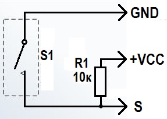
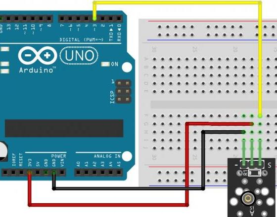

Модуль датчика вибрации KY-002
Модуль воспринимает механические воздействия на прибор в котором он закреплен. Реагирует на удары, вибрацию, встряску. Используется в охранных системах. Интересное применение в движущейся робототехнике для регистрации столкновения с препятствием.

На плате модуля установлен механический датчик SW-18010P или SW18015P. Внутри цилиндрического корпуса находится пружина, в центре которой металлический стержень. При ударе пружина касается стержня. Один контакт датчика пружина, второй стержень.

Кроме простого замыкания контактов датчика модуль KY-002 способен формировать импульсы напряжения. Для этого в схему входит резистор 10 кОм подключенный к линии питания. В обычном состоянии на выходе модуля напряжение питания. При замыкании контактов датчика напряжение выхода становится равным нулю. Удары вызывают формирование на выходе коротких отрицательных импульсов.

Технические характеристики модуля KY-002:
- Предельное напряжение коммутации — 12 В.
- Гарантированное количество срабатываний — более 100000.
- Сопротивление контактов:
- разомкнуты — более 10 МОм;
- замкнуты — менее 30 миллиОм;
Назначение выводов (рис. 1) представлено в таблице 1.
Таблица 1
| Контакт | Назначение |
|---|---|
| S | Цифровой выход |
| VCC | +5 В |
| — | Общий (GND) |

Источники
umnyjdomik.ru - "KY-002" – модуль с датчиком вибрации (цифровой выход) для ARDUINO
arduino-tex.ru - KY-002 Модуль определения вибрации. Подключение к Arduino.